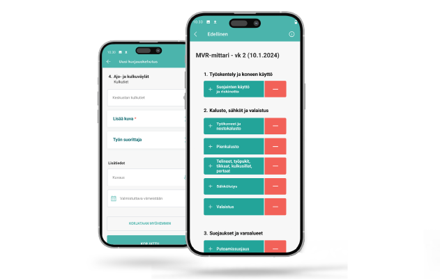
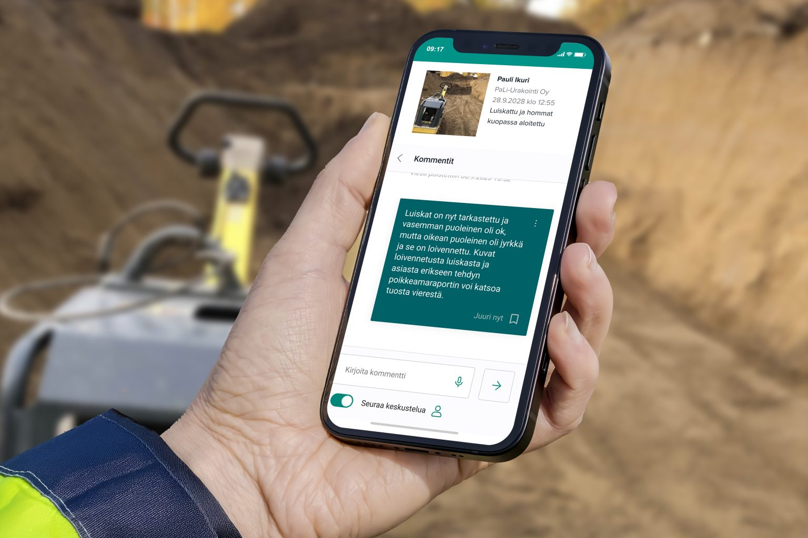
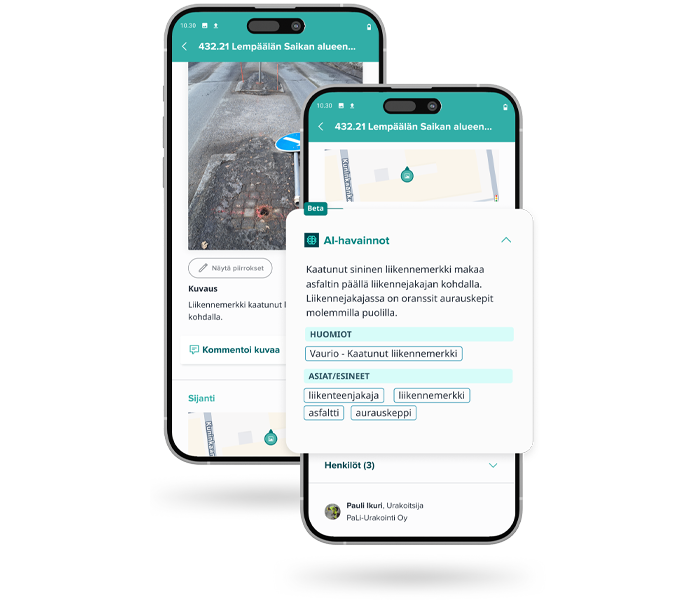
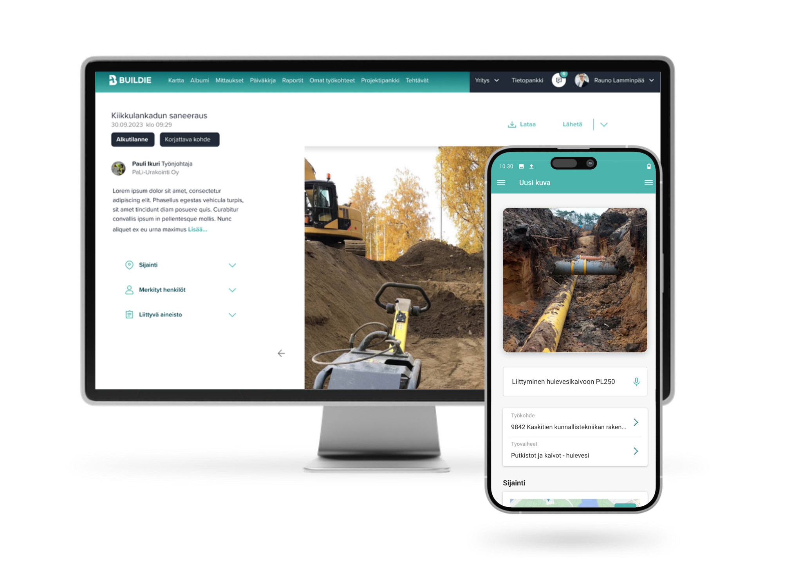
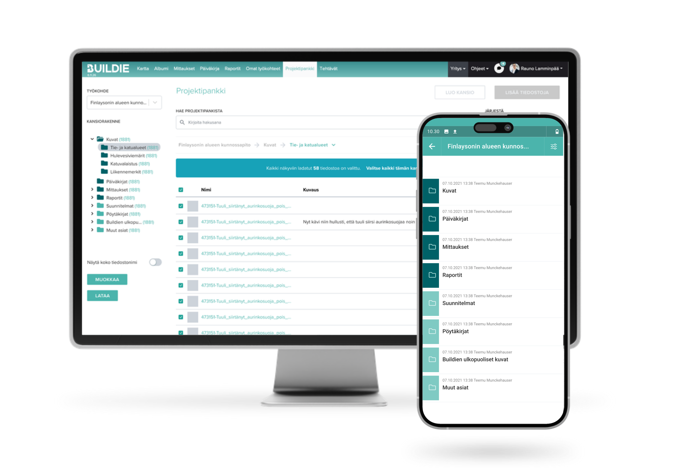

I own several product areas from ideation to release, backed by extensive field research as the basis for development.
In these projects I was responsible for the business value, for defining the development needs and for steering the implementation.

SafetyA completely redesigned digital safety inspection tool for infrastructure construction — bringing transparency, comparability and fraud prevention for the first time. Inspection history now reveals when inspections are rushed through or done in the wrong place.
The mobile app launched first and the dashboard followed later, but data collection was enabled from day one. This bought extra time for dashboard development without holding up the pilot. The launch met management's first-year sales targets and led to speaking invitations from industry associations.

CommunicationA communication tool built directly into photos, with @-mentions and push notifications. Request and confirm clarifications without separate task management — everything is stored and easy to find.
Deliberately kept lightweight, without task forwarding, so it would not cannibalise the value of the Tasks feature. The most-used new communication feature of its pilot year, spreading organically to almost every customer company.

AIThe first AI feature shipped to production. The AI categorises photos automatically and records observations — reducing human error and helping manage large volumes of material on construction sites.
We started with object detection rather than detailed AI analysis, so the technology could be trialled with a low threshold and customers involved in development at a concrete level. Development finished on the schedule set by the management team.

PhotographyA completely new, map-based camera flow. The separate burst mode was removed and photography merged into one streamlined flow — field use showed that burst shooting was too heavy in site conditions. A unified solution makes learning easier for new users and scales better across use cases.
Field research on five site visits across Finland — around ten interviewees from different customer segments, together with a UX designer. The new feature was ready for development within two months of starting the research.

AI · Project BankAutomatic AI-assisted comparison of file versions in the Project Bank. Text files get a written summary of the changes; drawings get a visual highlight of the differences.
We start with text-based comparison because LLMs are more reliable with text — image comparison relies on pixels, not AI interpretation. From customer feedback to product spec within three months; the pilot starts in Q2 2026.
Good product development starts with genuine customer understanding. I have carried out several studies that have directly shaped the direction of development.
An extensive field study of the current state of site photography. Five site visits across Finland and around ten interviewees from four customer segments — supervisors, maintenance staff, installers and permit handlers. The study led directly to launching the Photography 2.0 project.
A study on using design drawings as a map layer. I mapped the customer need, which led to a feature that keeps the site map up to date using design drawings. It improves GPS accuracy and makes navigation on site easier.